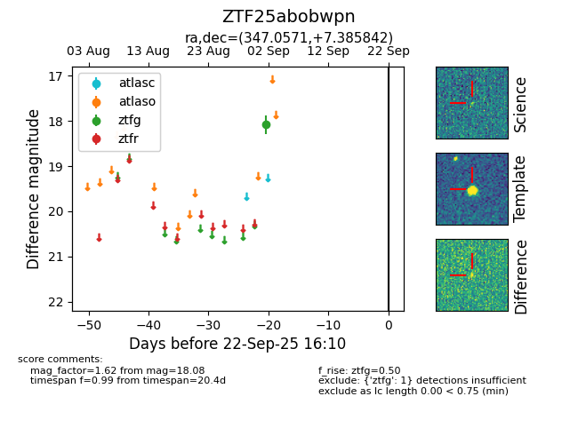

FINK: ZTF25abobwpn
Lasair: ZTF25abobwpn
ALeRCE: ZTF25abobwpn
ZTF25abobwpn (ztf,fink)
equatorial (ra, dec) = (347.0571,+7.38584)
galactic (l, b) = (83.3180,-47.39111)

last ztfg=18.08
1 ztfg detections